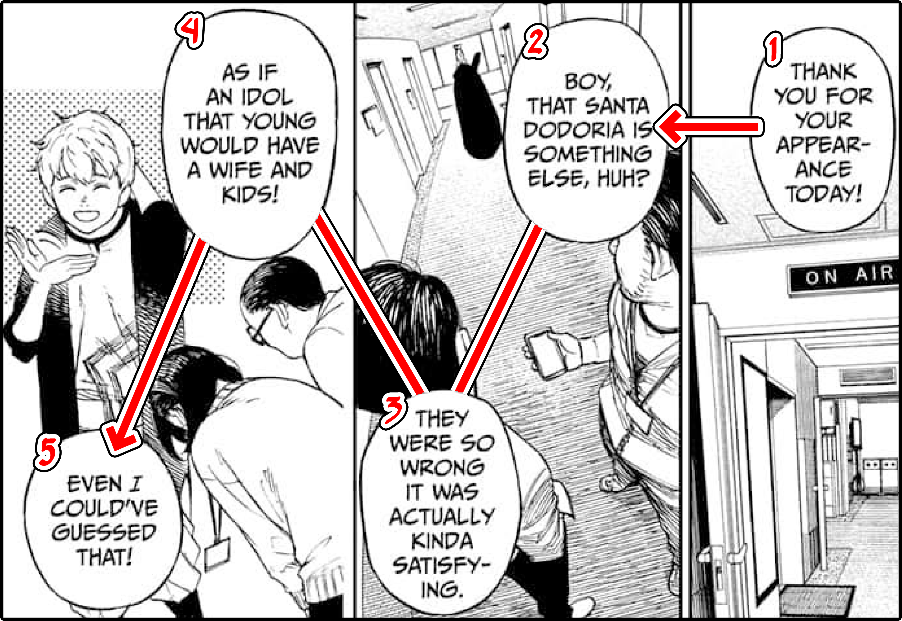

OUR DATA
For this Project we used the transcripts from the DanDaDan manga and anime as a base, going in with XML
(specifically with TEI and CBML) to
label each line of text. We found 3 things important to label here:
- Names: Very obviously important, we labelled each character with consistent character names. In
the manga transcripts we encoded with attribute who on speech bubble elements. In the anime transcripts
we encoded with both speaker elements and who attributes.
- Diegetic Text: There are magazines and location signs in this media, and we wanted to compare the
two. In
the manga transcripts we encoded with element cbml:caption. In the anime transcripts we encoded with
caption elements.
- Scenes: To help divide the manga and anime into easily digestible segments we chose important
points to "break" the text into, making it easier to analyze in smaller chunks. In
the manga and anime transcripts we encoded with div and id elements.

Transcripts of the anime already existed however for the manga we had to
manually transcribe all of the text
which proved to be a time-consuming task. When you read manga you read it right to left, which is a small
hurdle when reading as a human, however this meant that we couldn't directly copy and paste the text, as due
to the reversed order and wonky panel structure, it would paste totally out of order. As a result we had to
manually go through and paste each and every bubble individually!
Now that our data was encoded we were able to use XPath to pull out our key takeaways, see more on our Analysis page. Here our some fun stats about our data!